2018年北京市中考物理试题 · 选择题 第11、12、13、14、15题 · 对应解析
11. 有两个额定电压相同的电热水壶甲和乙，甲的额定功率为1800W，乙的额定功率为1200W．两个电热水壶都正常工作时，下列说法中正确的是（ ）
A. 甲电热水壶两端的电压较高 B. 电流通过甲电热水壶做功较快
C. 通过两个电热水壶的电流相等 D. 相同时间内，两个电热水壶消耗的电能一样多
【答案】B
【解析】A. 因为两个电热水壶的额定电压相同，且两个电热水壶都正常工作，即在额定电压下工作，所以甲、乙电热水壶两端的电压相等，故A错误；
B. 都正常工作时，甲的额定功率大，所以电流通过甲电热水壶做功较快，故B正确；
C. 都正常工作时，甲的额定功率大，根据
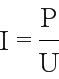
，通过甲电热水壶的电流大，故C错误；D. 都正常工作时，甲的额定功率大，根据
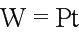
可知，相同时间内，甲电热水壶消耗的电能多，故D错误；故选B。
点睛：要理解用电器在额定电压下工作时的功率才是额定功率，正常工作即代表在额定电压下工作，再者要理解功率是表示做功快慢的物理量，所以功率大即代表做功快。
12. 小海设计了一种测定油箱内油量的模拟装置，如图所示，其中电源两端电压保持不变，R0是定值电阻，R是滑动变阻器的电阻片，滑动变阻器的滑片P跟滑杆的一端连接，滑杆可以绕固定轴O转动，另一端固定着一个浮子。油箱中的油量减少时，浮子随油面下降，带动滑杆使变阻器的滑片P向上移动，从而引起电流表的示数发生变化。下列说法中正确的是（ ）
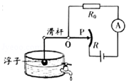
A. 电流表示数变小时，表明油箱中的油量减少
B. 电流表示数变小时，电阻R0两端电压变大
C. 当油箱中的油量减少时，电流表示数变大
D. 当油箱中的油量减少时，变阻器R连入电路的电阻变小
【答案】A
【解析】如图，定值电阻R0与滑动变阻器R串联在电路中，电流表测量电路中电流。
A. C. D 当油箱中的油量减少时，浮子下降，带动滑片上升，滑动变阻器接入电路的电阻变大，电路总电阻变大，根据
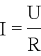
可知，电路中电流变小，所以电流表示数变小时，表明油箱中的油量减少，故A正确，CD错误；B. 电流表示数变小时，即通过R0的电流变小，根据
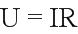
知，电阻R0两端电压变小，故B错误；故选A。
点睛：考查了欧姆定律的应用，关键是电路的动态分析，当油量减少时，滑片上升，所以滑动变阻器接入电路电阻变大，电流变小，电阻R0两端电压变小。
13. 在如图所示实验中，将小铁球从斜面顶端由静止释放，观察到它在水平桌面上运动的轨迹如图甲中虚线OA所示。在OA方向的侧旁放一磁铁，再次将小铁球从斜面顶端由静止释放，观察到它在水平桌面上运动的轨迹如图乙中虚线OB所示。由上述实验现象可以得出的结论是（ ）
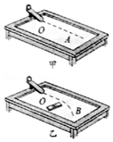
A. 小铁球在桌面上继续运动是由于受到向前的作用力
B. 磁铁对小铁球没有作用力
C. 力可以改变小铁球的运动方向
D. 力可以使小铁球发生形变
【答案】C
【解析】A. 小铁球在桌面上继续运动是因为小球具有惯性，故A错误；
B. 磁铁能够吸引铁质物品，所以磁铁对小铁球有吸引力，故B错误；
C. 在磁铁对小铁球的吸引力作用下，小球改变了运动方向，故可以说明力可以改变小铁球的运动方向，C正确；
D. 小铁球的运动方向发生了改变，但没有发生形变，所以不能说明力可以使小铁球发生形变，故D错误；
故选C。
点睛：重点是牢记力的两个作用效果，即力可以改变物体的形状；力可以改变物体的运动状态。
14. 中国科技馆有一个由小车和螺旋桨组成的装置，如图所示。小车在磁体间的相互作用下悬浮于水平平直轨道上。按下控制开关，小车左端的螺旋桨开始转动，小车由静止开始沿轨道向右运动，速度逐渐增大；一段时间后，小车右端的螺旋桨也开始转动，最终在两个螺旋桨转速的自动调节下，小车可以停在轨道上。下列说法中正确的是（ ）
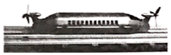
A. 小车静止悬浮在轨道上时，只受到重力作用
B. 小车静止悬浮在轨道上时，受到竖直向上的磁力
C. 小车向右运动的过程中，所受合力一定为零
D. 小车速度增大的过程中，小车的机械能不变
【答案】B
【解析】A. 小车静止悬浮在轨道上时，是平衡状态，小车受到的重力与向上的磁场力是一对平衡力，如果只受重力，不会悬浮，故A错误；
B. 小车静止悬浮在轨道上时，受到的重力与向上的磁场力是一对平衡力，所以受到磁力的作用，故B正确；
C. 合力为零时会保持匀速直线运动，而小车向右运动的过程中，速度逐渐增大，所以不是平衡状态，合力一定不为零，故C错误；
D. 小车速度增大的过程中，动能增大；高度不变，重力势能不变，所以小车的机械能变大，故D错误；
故选B。
点睛：重点是平衡状态的判断，要牢记静止和匀速直线运动时物体一定受力平衡，即受到平衡力的作用。
15. 如图所示，盛有水的杯子静止在水平桌面上。杯子重1N，高9cm，底面积30cm2；杯内水重2N，水深6cm，水的密度为1.0×103kg/m3，g取10N/kg。下列选项中正确的是（ ）
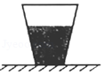
A. 水对杯底的压强为900Pa B. 水对杯底的压力为2N
C. 水杯对桌面的压强为1000Pa D. 水杯对桌面的压力为2.8N
【答案】C
【解析】A. 根据
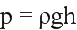
计算水对杯底的压强为：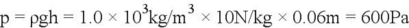
，故A错误；B. 根据
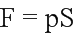
计算水对杯底的压力为：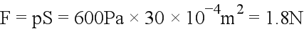
，故B错误；C. D. 杯子静止在水平桌面上时，对桌面的压力等于总重，即压力为：
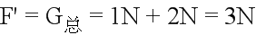
，故D错误；水杯对桌面的压强为：
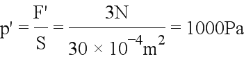
，故C正确；故选C。
二、多项选择题